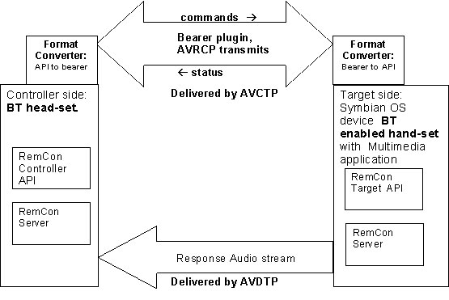

The Bluetooth Remote Control Framework provides the APIs needed to send (CRemConCoreApiController) and receive (CRemConCoreApiTarget) remote control commands to/from a Bluetooth enabled device.
In this overview
You will learn about the Bluetooth Remote Control Framework. Several tutorials are provided, links are at the end of the overview, to help get you started writing remote control applications.
The Bluetooth subsystem provides a number of APIs that you will use to establish a connection to a Bluetooth device that provides the required services. The APIs you need to know about include:
Establishing a Bluetooth connection.
Finding a device that can provide the necessary services.
The serial communications framework.
The interface to protocols.
The Audio Video Remote Control Profile (AVRCP) is implemented by the Remote Control Framework. A remote control bearer plug-in is required, which uses socket APIs internally to send and receive Audio Video Control Transport Protocol (AVCTP) data over ESock.
The controller is a device that sends a control message or command to a target device and is ready to capture responses.
The target is a device that accepts the control message or command from the controller, invokes necessary procedures and sends out responses to controller.
The bearer is a carrier that acts like a vehicle of transmission for remote control messages. The bearer here is an Ecom plugin to the RemCon server.
The bearer that plugs into the RemCon server and transmits remote control messages (commands) and status responses.
This is an ECom plug-in that converts the message format from the Client side API to the bearer format and vice versa.
The protocol that defines the methods and messages used for controlling Audio/Video devices.
The AVDTP is used to send frames of encoded multimedia data over Bluetooth.
The Bluetooth Remote Control Framework provides APIs that make it possible for a device to participate in remote control relationship. The framework can be used to create an application with one of three behavior sets, they are:
Device acts as a remote controller
Device is controlled remotely
Combination of the above in a single device / application.
Remote Controller
As a controller the device will send commands to a target device. A controller can be connection-orientated, meaning it identifies a specific device to control and maintains a connection with that device, or connectionless, meaning remote control commands are sent out into the air for any receptive device to accept.
The Controller APIs allow an application to send commands to a remote controlled device.
Controller APIs include:
Controlled Remotely
Known as the target device, this device receives commands from a controller. Target devices may only be connectionless, meaning they will always respond to valid remote control commands, regardless of the source of said commands.
The Target API enables applications to receive commands and to query for information from the controller.
Target APIs include:
How Remote Control Works
The following diagram shows how the Remote Control Framework works for a handsfree headset example.
The controller application uses the Controller API, which is connected to the RemCon Server. The ECom plugin or AVRCP in this case is plugged into the RemCon server. The message format from the Controller API is converted into AVRCP format by the Converter plugin which in turn converts it into target API format at the other end. The target APIs invoke the necessary actions on the application and update the RemCon server of the status. The applicable Audio Video Distribution Transport Protocol (AVDTP) is used to deliver the output stream from the multimedia application to the controller device. The RemCon Server status is updated to the Controller through the AVRCP bearer.
The following tutorial series has been provided to make writing remote control applications easier.
Copyright ©2010 Nokia Corporation and/or its subsidiary(-ies).
All rights
reserved. Unless otherwise stated, these materials are provided under the terms of the Eclipse Public License
v1.0.